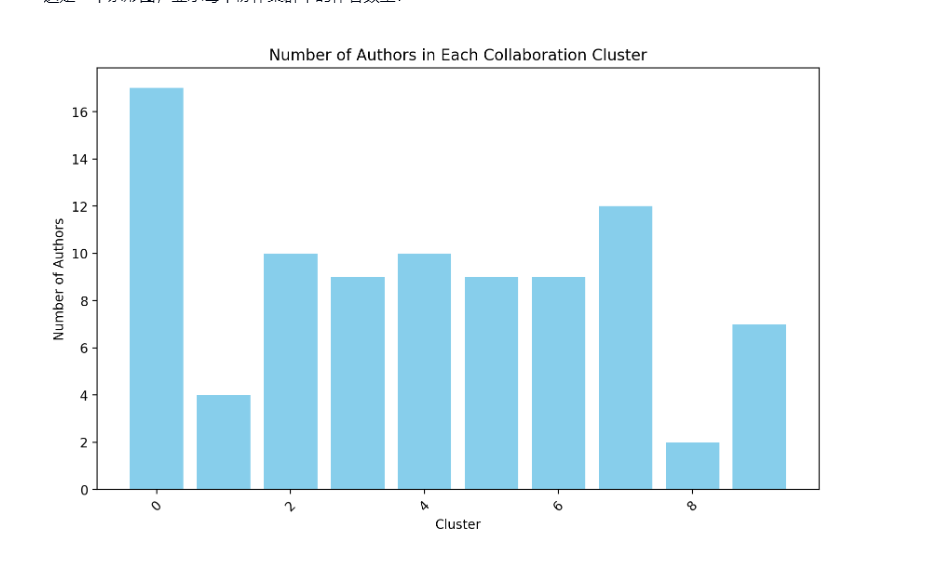

Research Questions
RQ1: Can we identify key influential authors based on the number of connections they have?

Top authors with the most connections.
RQ2: Are there specific groups or clusters of authors who frequently collaborate with each other?
The Louvain method was applied to this graph to compute the best partition of the graph into communities. The method works by optimizing the modularity of the graph, which is a measure of the density of the edges inside the communities compared to the edges between the communities.
Each bar represents a distinct collaboration cluster, and the height of the bar represents the number of authors in that cluster. This visualization helps us understand the distribution of authors across the different collaboration clusters. It shows that some clusters have more authors (and hence more collaborations) than others.

Here is the distribution of the research field in the biggest cluster.